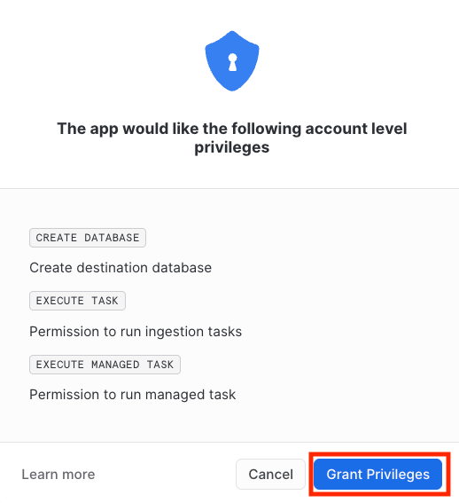

In this tutorial you will learn how to build a native Snowflake push based connector. In the following steps we will cover what constitutes a connector, how to build and deploy it and how to build an application UI using Streamlit.
- Basic knowledge of Snowflake Native Apps
- Basic knowledge of Java
- Snowflake user with
accountadminrole - macOS or Linux machine to build a project and run deployment scripts
- Creating Native Applications in Snowflake
- Ingesting data to Snowflake using snowflake-ingestion-sdk
- Running Snowflake procedures using snowflake-jdbc
- How to optimize merge for the CDC scenario using deferred merge approach
- Install Java 11 or later
- Install snowsql
- Configure snowsql to allow using variables (
variable_substitution = True) - Configure snowsql to exit on first error (
exit_on_error = True) - Clone the connectors-native-sdk repository and go to
./examples/example-push-based-java-connector
This connector consist of Java Agent and Native Application. Java Agent acts as an application which is close to the data source, it fetches data from the data source and pushes it to Snowflake.

Native Application
- runs natively in Snowflake
- contains a stored procedure which initializes resources by creating all objects in the database needed for the deferred merge
- contains Streamlit UI which visualises data
- contains the following database elements:
- schemas:
PUBLIC- versioned, used to store all public proceduresTASKS- stateful, used for tasks
- procedures:
INIT_DESTINATION_DATABASE- procedure which is used to create a destination database for the resourcesINIT_RESOURCE- procedure which initializes a resource, it creates the following elements in the destination database:- base table
- delta table
- view which contains merged data from the base and delta tables
- task which periodically merges the data from the delta to the base table
- destination database - a database for all the resource data, it is created outside the Native Application by the
INIT_DESTINATION_DATABASEprocedure
- schemas:
Only selected objects will be visible to customer who installed the app. See: docs.
Java Agent
- a simple Java application
- connects to the Native Application
- runs
INIT_DESTINATION_DATABASEprocedure on startup - initializes a new resources using the Native Application's procedure
INIT_RESOURCE- uses snowflake-jdbc library for calling stored procedure
- ingests the data to Snowflake
- uses snowflake-ingest-sdk library for ingesting the data
- contains a CLI for enabling new resources
Let's take a look at the structure of this connector.
├── Makefile
├── example-push-based-java-connector-agent
│ ├── build.gradle
│ └── src
├── example-push-based-java-connector-native-app
│ ├── environment.yml
│ ├── manifest.yml
│ └── scripts
│ │ ├── deploy.sql
│ │ └── install.sql
│ ├── setup.sql
│ └── streamlit_app.py
├── gradle
├── gradlew
├── gradlew.bat
├── imgs
├── integration-test
├── README.md
├── settings.gradle
└── sf_build.sh
Native Application module
Contains files which are needed to create a Snowflake Native App:
manifest.yml- Manifest file required by the native apps model.setup.sql- This script includes definition of all components that constitute the connector including procedures, schemas and tables.streamlit_app.py- File which contains the UI of the connector.scripts/deploy.sql- Script which uploadsmanifest.yml,setup.sqlandstreamlit_app.pyto Snowflake.scripts/install.sql- Script which creates a native application from the files uploaded bydeploy.sqlscript.
Java Agent module
Contains Java files that constitute the Agent application and gradle files that are needed to build this application.
sf_build.sh script
Simple script to collect all files needed to deploy Snowflake Native App into sf_build folder. This directory will be used in deployment script.
imgs directory
Images used in README file.
Example application logs various operations during runtime. By default, those logs are not stored anywhere. To enable log storing please refer to enable loging documentation.
Snowsql configuration
This quickstart uses some convenience scripts for running necessary commands. Those scripts use snowsql. Before proceeding you need to configure snowsql connection to your Snowflake account according to documentation.
Generating Pubic and Private Keys
Java Agent uses snowflake-ingestion-sdk library which uses key pair authentication. In order to set up the connection you need to generate Public and Private Keys. To achieve it, run the following commands:
openssl genrsa 2048 | openssl pkcs8 -topk8 -inform PEM -out rsa_key.p8 -nocrypt
openssl rsa -in rsa_key.p8 -pubout -out rsa_key.pub
The commands will create 2 files with a public key (rsa_key.pub) and a private key (rsa_key.p8). The keys will be used in the following steps.
Configure user in Snowflake
Configure a public key for your user by running the following sql command in your Snowflake worksheet. Use the public key generated in the previous step. Key inside the query should not have any whitespaces and should be a one-line string.
ALTER USER <your_user> SET RSA_PUBLIC_KEY='<Your Public Key>';
If your user does not have a password configured, run the following command to set the password.
ALTER USER <your_user> SET PASSWORD = '<Your Password>' MUST_CHANGE_PASSWORD = FALSE;
The password will be needed for the Java Agent to connect to the Native Application using snowflake-jdbc.
Native application configuration
In order to create a native application you need to adjust the value in the Makefile script for:
CONNECTION- a name of snowsql connection defined in previous step
You can also change the rest of the properties:
APP_NAMEAPP_VERSIONSTAGE_DBSTAGE_NAME
Those values will be used by all scripts used in this quickstart.
Note: After changing APP_NAME you will need to adjust native_application.database_name property in the Java agent configuration step below.
Java agent configuration
In order to build the Java Agent and connect it to Snowflake you need to edit the following properties in /example-push-based-java-connector-agent/src/main/resources/connector.properties:
account- Snowflake account nameuser- Snowflake usernamejdbc.password- Snowflake password for given user, it will be used to connect to Snowflake via jdbcwarehouse- warehouse which you want to useingestion.host- Snowflake hostingestion.private_key- private key generated in previous step with removed whitespaces (one-line string). To make sure that your private key property does not contain any whitespace at the beginning and at the end you can wrap it with quotes.jdbc.url- jdbc url which should contain correct Snowflake hostnative_application.database_name- this property has to be changed ifAPP_NAMEin Makefile was changed, it should haveAPP_NAMEvalue with_INSTANCEsuffix
Example file with all the necessary properties looks like this:
account=myaccount
user=myuser
role=accountadmin
warehouse=mywarehouse
native_application.database_name=EXAMPLE_PUSH_BASED_CONNECTOR_TEST_INSTANCE
native_application.schema_name=PUBLIC
destination_database.database_name=EXAMPLE_PUSH_BASED_CONNECTOR_DATA
destination_database.schema_name=PUBLIC
ingestion.host=myaccount.snowflakecomputing.com
ingestion.scheme=https
ingestion.port=443
ingestion.private_key="MIIEvQIBADANBgkqhkiG9w0BAQEFAASCBKcwggSjAgEAAoIBAQCsm5SOTkt/I0K5(...)"
jdbc.password=mypassword
jdbc.url=jdbc:snowflake://myaccount.snowflakecomputing.com
upload.initial.record-count=100
upload.periodical.record-count=20
upload.periodical.interval-seconds=10
upload.scheduler.pool-size=3
When user starts the Java Agent application, it connects to the Native Application and runs the INIT_DESTINATION_DATABASE procedure. Then the CLI is launched and user can enable and disable resources using appropriate commands. When a resource is enabled, Java Agent performs the following steps:
- Initializes the resource - connects to the Native App and runs
INIT_RESOURCEprocedure - Runs initial upload - loads some records from the data source and uploads them to the base table
- Schedules periodical upload (CDC) - loads and uploads some records to the delta table every 1 minute
In the meantime, on the Native App side, the merge task is invoked. It merges the data from the delta to the base table.
Simplified sequence diagram

Detailed sequence diagram

Overview
Build step for the app consist of:
- Creating a new
sf_builddirectory on the local machine for the Native App artifacts - Creating a new
sf_build_javadirectory on local machine for the Java Agent artifacts - Copying of the
Agent.jarto thesf_build_javafolder - Copying of the
manifest.ymlto thesf_buildfolder - Copying of the
setup.sqlto thesf_buildfolder - Copying of the
streamlit_app.pyto thesf_buildfolder
The sf_build directory serves as the source of truth about the Native Application definition.
Building
To build the connector execute a convenience script:
make build
In this step we will deploy the connector to the Snowflake account.
Overview
Deployment step consists of:
- Creating a database and stage for the app artifacts
- Uploading the
sf_buildcontents to the newly created stage - Creating an application package using the data from the stage
Deploy the app
To deploy the connector execute a convenience script:
make deploy
In this step you will install the connector. The installation is encapsulated in a convenience script install.sql.
Overview
The installation step consists of:
- Creating a new application using the application package which was created in the previous step
- Granting the necessary privileges to the application
Running the installation script
To install the connector using the convenience script run the following command:
make install
To configure the connector and grant the rest of the necessary privileges log into Snowflake and go to the Apps tab.
Grant privileges
When accessing the Streamlit dashboard of the connector for the first time a permissions pop-up will be displayed. The requested privileges must be granted for the connector to work properly.

Create a sink database
Agent that provides the data to the Native App requires a database to work. This database is created by the Native App. To create it just enter the database name in the input box and press Configure button.

To run the Java Agent run the following command:
make run_agent
This command runs the agent's command line interface. The following commands are available to use:
enable {resource_name}- initializes a resource and runs the initial and the periodical upload, example usage:enable first_resourcedisable {resource_name}- disables periodical upload of a given resource, example usage:disable first_resourcequit- disables all the active resources and quits the application

You can check the Refresh automatically checkbox to enable a periodical refresh of the page - this way you will see rising charts when the data is being ingested.
Example-push-based-java-connector repository contains a module with an integration test.
Overview
This test checks if the whole application flow works as expected. It performs the following steps:
- builds the connector
- deploys the connector
- installs the connector
- initializes the destination database
- initializes a new resource
- performs the initial upload
- performs a single iteration of the periodical upload
- executes the merge task
- drops the connector application and all the database elements that were created
Running the test
The integration test can be run using a simple make command:
make test
Congratulations! You have successfully completed these Labs
In this guide, you have learned how to:
- create a push based connector
- create Native Applications in Snowflake
- use
snowflake-ingestion-sdkto ingest the data to Snowflake - use
snowflake-jdbcto run Snowflake procedures - optimize merge for the CDC scenario using the deferred merge approach